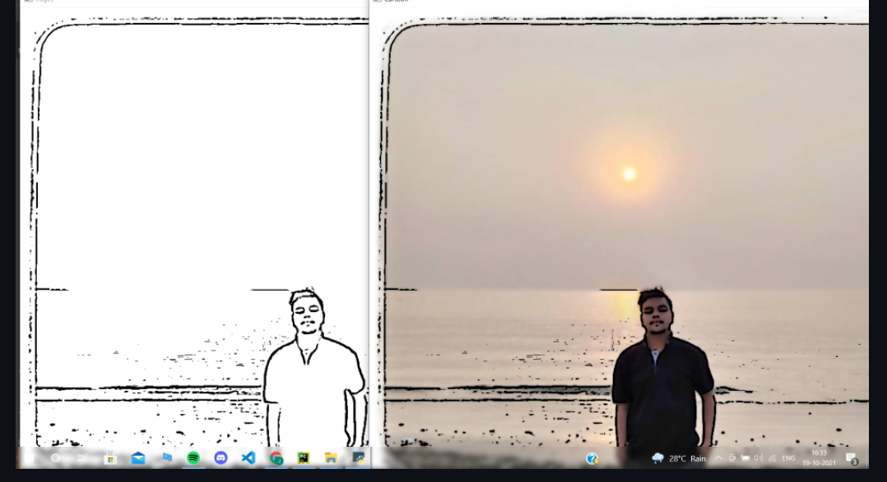

Cartoonizer using Open CV
A basic Automated Script using Open CV to change pictures into Cartoons.
OpenCV (Open Source Computer Vision Library) is an open source computer vision and machine learning software library. OpenCV was built to provide a common infrastructure for computer vision applications and to accelerate the use of machine perception in the commercial products. Being a BSD-licensed product, OpenCV makes it easy for businesses to utilize and modify the code.
GitHub Link
Technologies:
- - Python
- - Open Cv
- - Pygame
- - Pycharm IDE